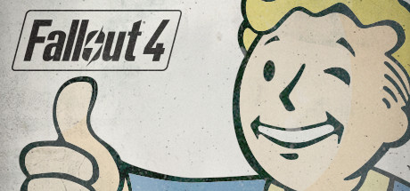

ITEC 3870 WEBPAGE PROJECT - MISCELLANEOUS
Hobbies - Gaming
Final Fantasy Series
I've been playing Final Fantasy titles since the days of Super Nintento. This is one of the few franchises from my past that remains relevant today.
Borderlands Series

Pure insanity at its finest.
Skyrim

Not half bad on its own, Skyrim really shines when you throw some mods in the mix. Visually stunning with the right setup, and heaps of content.
Lord of the Rings Online
Back in my day, everything was terrible, and we liked it! I still keep in contact with my raiding buddies from this game, though I do regret the obscene amount of non-refundable hours it took from me.
Fallout Series

This is basically Skyrim with more post-apocalypse-ness. Makes sense, considering the same studio produced both games.
ARK: Survival Evolved

More or less Jurrasic Park the game, with 100% more crapped pants. Park may require some assembly.